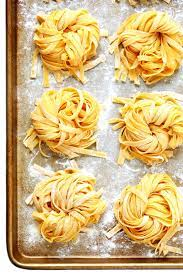
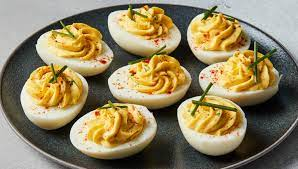
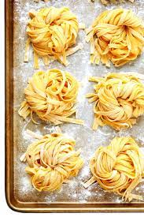
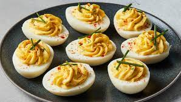

.jpeg)
What to do with eggs
Farm-fresh eggs offer a delectable taste of tradition and quality that store-bought varieties often lack. From their vibrant yolks to their robust flavor, these eggs are a testament to the care and attention lavished on each feathered friend. Unlike their mass-produced counterparts, farm-fresh eggs are a rich source of essential nutrients like protein, vitamins, and healthy fats, making them a wholesome addition to any meal. Beyond their nutritional value, supporting local farmers and sustainable agriculture practices adds another layer of benefit, fostering community connections and environmental stewardship. Embrace the joys of farm-fresh eggs – not just as ingredients, but as a symbol of a simpler, more authentic way of life.
Farm-fresh eggs lend their unparalleled flavor and nutritional richness to a wide array of dishes. Here's a list of foods to elevate with the goodness of farm-fresh eggs:
- Omelettes and Frittatas: Whip up fluffy omelettes or hearty frittatas filled with your favorite vegetables, meats, and cheeses for a satisfying breakfast, brunch, or dinner option.
- Quiches and Stratas: Create savory quiches or comforting stratas layered with vegetables, meats, and cheeses encased in a buttery pastry or bread base.
- Scrambled Eggs: Enjoy simple yet flavorful scrambled eggs cooked to perfection and seasoned with herbs, cheese, or spices for added flair.
- Baked Goods: Elevate your baking game with farm-fresh eggs, using them in cakes, cookies, muffins, and bread for superior texture, moisture, and flavor.
- Pancakes and Waffles: Whip up fluffy pancakes or crispy waffles made with farm-fresh eggs for a delightful breakfast or brunch feast.
- Custards and Puddings: Prepare creamy custards, silky puddings, or rich flans infused with the richness of farm-fresh eggs for a luxurious dessert experience.
- Homemade Pasta: Craft silky pasta dough enriched with farm-fresh eggs for homemade pasta dishes like ravioli, lasagna, or spaghetti for an authentic Italian feast.
- Egg Salad: Make a classic egg salad with hard-boiled farm-fresh eggs mixed with mayonnaise, mustard, herbs, and spices for a tasty sandwich filling or salad topping.
- Deviled Eggs: Impress guests with elegant deviled eggs featuring creamy yolks mixed with mayonnaise, mustard, and various seasonings for a delightful appetizer or party snack.
These are just a few ideas to get you started, but the possibilities with farm-fresh eggs are truly endless. Whether used in savory or sweet dishes, their unparalleled freshness and flavor will undoubtedly shine through, elevating every bite.

 


